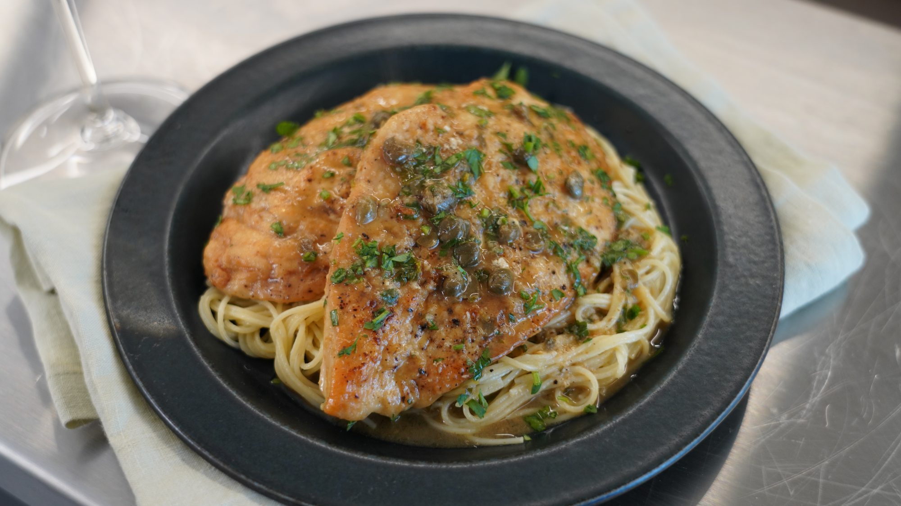

Chicken Piccata

Perfect Chicken Piccata - My family loves this recipe!
Briny capers and a tangy, fresh lemon sauce top tender pieces of breaded chicken in this easy, restaurant-quality recipe for chicken piccata. The sauce is so addicting, you'll want to drink it! Serve with pasta.
Ingredients
- 4 (4 ounce) boneless, skinless chicken breast halves
- 1 ½ teaspoons kosher salt
- 1 teaspoon ground black pepper
- And more shit I don't feet like listing - figure out the rest.
Steps
- Slice chicken breasts in half lengthwise and lightly pound to 1/2-inch thick. Season evenly on both sides with salt and pepper. Dredge each piece in flour to coat the surface and shake off any excess flour.
- Heat 2 tablespoons oil and 1 1/2 tablespoons butter in a large skillet over medium-high heat until just beginning to smoke. Add 1/2 of the chicken and cook, undisturbed, until browned and easily released from the skillet, 2 1/2 to 3 minutes. Flip and cook for 2 more minutes. Remove from the skillet. Add remaining 1 tablespoon oil to the drippings and repeat the cooking process with remaining chicken. Reserve all chicken on a plate.
- Reduce heat to medium and melt remaining 1 1/2 tablespoons butter in the skillet. Add wine and capers and stir, scraping to release any browned bits from the skillet; bring to a simmer. Cook for 2 minutes to slightly reduce. Add chicken stock, lemon juice, and lemon zest; stir to combine. Bring to a simmer and cook for 2 minutes.
- As for the rest... you're on your own. Good luck!